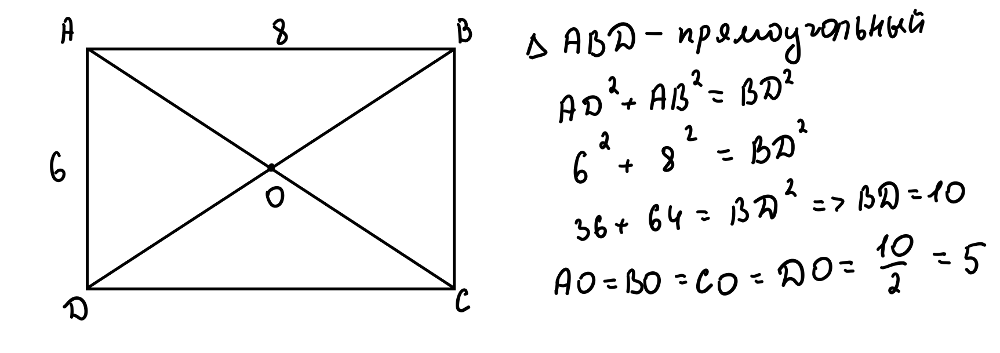
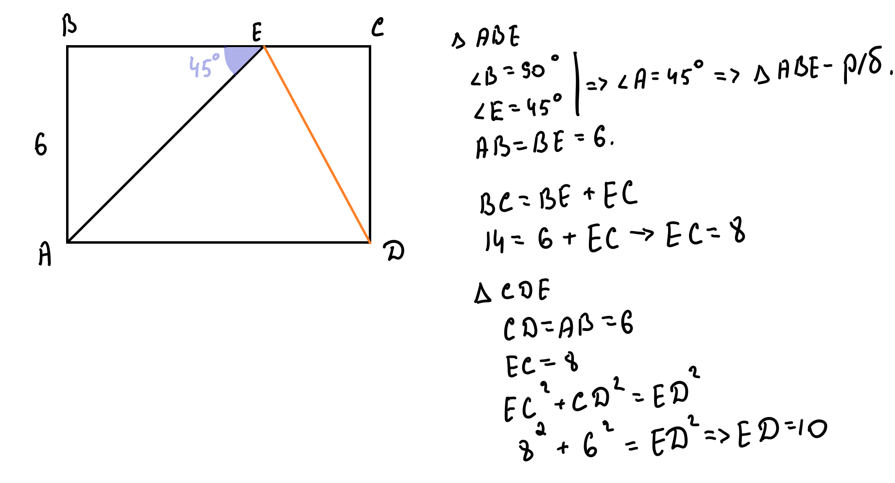
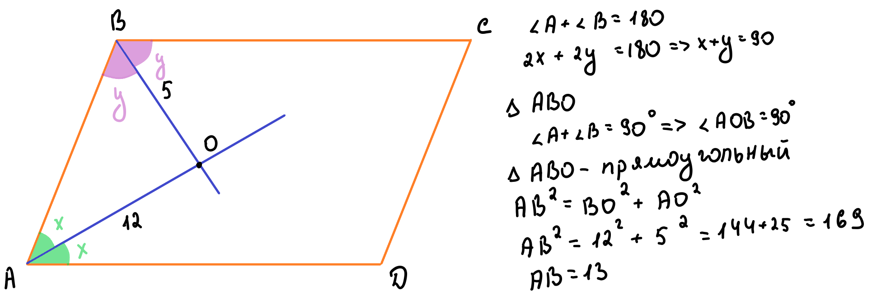
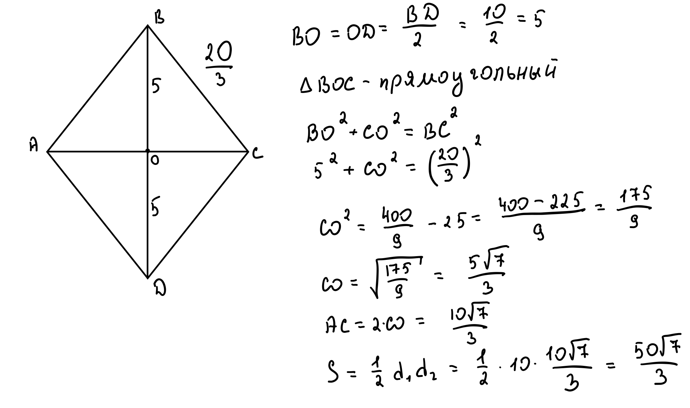

Квадрат, прямоугольник, ромб и их свойства
Рисунок 1 - квадрат (красные отрезки - диагонали)
Периметр: P = 4a
Площадь: S = a²
Рисунок 2 - прямоугольник
Периметр: P = 2(a + b)
Площадь: S = a × b
Рисунок 6 - ромб
Площадь: S = a × h или S = ½ × d₁ × d₂
Рисунок 3 - параллелограмм
Площадь: S = a × h или S = a × b × sin(α)
Все перечисленные фигуры - частные случаи параллелограмма и обладают его свойствами:
Рисунок 4 - площадь через высоту
Рисунок 5 - площадь через синус
Пример 1. Периметр квадрата равен 40. Найдите его площадь.
Дано: P = 40
Найти: S
1. Запишем формулу периметра квадрата:
2. Подставим известное значение периметра:
3. Найдем длину стороны (a):
4. Теперь вычислим площадь по формуле:
Ответ: Площадь квадрата равна 100.
Пример 2. В прямоугольнике ABCD стороны 6 и 8. Найти AO (точка О - пересечение диагоналей).
Рисунок 7 - решение примера 2
Дано: AB = 6, BC = 8
Найти: AO
1. Найдем диагональ прямоугольника по теореме Пифагора:
2. Вычислим квадраты сторон:
3. В прямоугольнике диагонали равны и точкой пересечения делятся пополам:
Ответ: Длина отрезка AO равна 5.
Пример 3. В прямоугольнике ABCD AB=6, BC=14. Точка E на BC, угол AEB=45°. Найти ED.
Рисунок 8 - решение примера 3
Дано: AB = 6, BC = 14, ∠AEB = 45°
Найти: ED
1. Рассмотрим треугольник ABE:
2. Треугольник ABE - равнобедренный (два угла по 45°), значит:
3. Найдем отрезок EC:
4. Теперь рассмотрим треугольник ECD:
5. По теореме Пифагора найдем ED:
Ответ: Длина отрезка ED равна 10.
Пример 4. В параллелограмме ABCD биссектрисы углов A и B пересекаются в точке O. AO=12, BO=5. Найти AB.
Рисунок 9 - решение примера 4
Дано: AO = 12, BO = 5
Найти: AB
1. В параллелограмме сумма соседних углов равна 180°:
2. Биссектрисы делят углы пополам:
3. Сумма половин углов в треугольнике AOB:
4. Найдем третий угол треугольника AOB:
Таким образом, треугольник AOB - прямоугольный.
5. По теореме Пифагора найдем AB:
Ответ: Сторона AB равна 13.
Пример 5. В ромбе диагональ BD=10, сторона=20√3. Найти площадь.
Рисунок 10 - решение примера 5
Дано: BD = 10, BC = 20√3
Найти: S
1. Диагонали ромба делятся точкой пересечения пополам:
2. Диагонали ромба перпендикулярны, поэтому треугольник BOC - прямоугольный.
3. По теореме Пифагора найдем половину второй диагонали (OC):
4. Вторая диагональ AC равна:
5. Площадь ромба найдем как полупроизведение диагоналей:
Ответ: Площадь ромба равна 50√47.